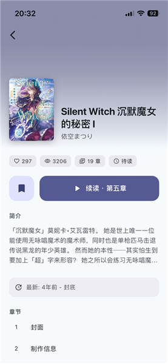
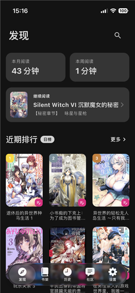

用 Novella 追网文快一年，来说说长期待在书架里的真实感受
从装它那天起我就觉得"又是一个换皮阅读 APP"，但将近一年过去它没被卸载反而是少数。这篇说的是用久了才浮出水面的那些细节。
当初装 Novella 的原因说起来有点敷衍——原来用的那个阅读 APP 书源接连失效，朋友推荐试试这个Novella官网上的轻书架第三方客户端，我扫了一眼功能列表就从下载拿了安装包装上了。没做什么功课，也没抱太大期望，反正在安卓上换阅读器的成本几乎为零。
哪点越用越顺手
刚开始最不习惯的是它的书架管理逻辑。以前用过的几个阅读器要么书架就是一列书，要么分组功能很弱。Novella 允许你给每本书打标签、建自定义分组，而且分组不是死板的文件夹嵌套，标签之间可以自由组合筛选——我把正在追的、已完本但留着纪念的、打算养肥再看的分成三个标签，切换起来比翻文件夹顺手得多。
但真正让我觉得"这个设计动过脑子"的是备份功能。第一次换机的时候，以前用的阅读器同步出了问题，我手动导了一堆 CSV 进度文件，一本书一本书对着恢复，折腾了一下午。这次换手机前想起有备份，点了一下"导出备份"，一个 JSON 文件直接存到 Download 目录，新机装好 Novella 后选"导入备份"，几秒钟的事，书架、书签、阅读时长全回来了。

还有一个细节是它不请求位置、相机、麦克风权限。现在很多 APP 一上来就问这问那，你不给权限就不让用。Novella 装完只问网络和存储，其他一律跳过，第一次启动的免责声明页就把这事儿说清楚了——"应用本身不产生任何内容，所有书籍来自社区维护的书源仓库"。读起来像免责条款，但你反过来想，这意味着它真的只干一件事：拉书源、渲染内容、存进度。没有广告推送的借口，没有分析用户行为的必要。
哪点越用越烦
如果说顺手的部分是慢慢品出来的，烦躁的部分则是在某个早晨突然撞上来的。
Novella 的自动同步走 GitHub Gist，听起来很酷对吧？问题是 Gist 在国内网络环境下偶尔会抽风。有一次我在地铁上追更一本连载，看完三章后想起来刚更的那本还没存进度，点同步转了三分钟转圈，最后弹了个"网络不通或授权过期"。那次之后我养成了每月手动导出备份的习惯——不是不信任自动同步，是那玩意儿在你最需要它的时候最容易掉链子。
还有存储空间。Novella 默认把章节缓存和封面图存在应用私有目录，用普通文件管理器看不到。前阵子手机提醒我存储空间不足，我进设置一看，Novella 的缓存占了快 6GB，但具体哪本书占了多少、缓存了多少过期章节，界面上没有一个直观的总览按钮，只能一本一本点进去看手动清。后来去Novella文档翻了一下才知道进"设置 → 存储 → 空间使用"能看到每本书的占用情况，但这个藏得有点深，第一次用的时候根本没摸到。

哪个功能成了每天离不开的
书签和高亮。
以前看网文很少用这个功能——网文嘛，看爽了就行，没想着回头找。但追更的时候偶尔会遇到一些伏笔或者作者埋下的细节，当时没在意，后来剧情接上了才想回去翻那一段。以前的阅读器书签是藏在菜单里的，点三层才能存一个位置。Novella 在阅读界面长按就能快速加书签，高亮选好文本就能标记，而且所有书签和高亮都会导出到备份里。
现在我已经养成习惯了，追更时看到有意思的段落就随手标一下。几个月下来攒了快两百条书签，回看的时候像是在翻自己的阅读笔记——哪段让我笑了、哪段让我吐槽了、哪段让我想起来跟朋友聊。这本来应该是阅读器的基础功能，但以前用的那几个要么做残了要么藏太深，Novella 是第一个让我真用起来的。
哪个碰都没再碰
插件仓库管理。
不是说这个功能不好用，是我装完之后发现自己根本不需要。Novella 允许用户自己加插件仓库、装脚本扩展书源，但社区维护的书源列表已经够我用了——起点、番茄、笔趣阁这些主流源都在，偶尔缺一本小众的搜搜也能找到。折腾插件仓库花了我大概一个周末，装了几个看起来很酷的脚本，结果用了两天全删了。对于我这种只追固定几本书的人来说，维护插件仓库的成本远高于收益。
观感修正
装它的时候我以为"第三方客户端"等于"功能阉割版"——官方 APP 有的它没有，稳定性还差。将近一年用下来，当初这个判断被打了脸。
Novella 没有付费墙，没有订阅模式，没有广告位。它不靠我赚钱，所以也不需要在界面里塞 Banner 或者做个"VIP 去广告"的弹窗。这听起来像是理所当然的事，但在安卓阅读 APP 这个领域，说实话挺难得的。我后来对比了一下同类的几个 APP，要么界面越来越花哨加了一堆社交功能，要么开始收费，要么书源质量断崖。Novella 是少数几个"专注一件事做好"的。
但我也高估了它的跨平台野心。它只做安卓，iOS 用户用不了，Windows 桌面版也没影。如果你平时主要用 iPad 或电脑看，这个直接 pass。而且安装包有 84MB，放在现在不算大，但比那些轻量的纯在线阅读 APP 还是胖了一圈。
去留结论
短期不会卸载。书架上还有三本在追的、两本养肥准备开读的，备份文件已经在云盘里躺着，换机恢复过一次流程走通了，书签积累了快两百条舍不得丢。
什么时候考虑换？如果有一天主流书源全失效了或者自动同步彻底用不了了，那时候再看有没有替代。但说实话，现在还没遇到过必须换的那个信号。
说个反直觉的：一个 APP 让你用了快一年没卸载，不代表它有多惊艳的亮点，恰恰可能是因为它没什么明显的硬伤。能好好追书、进度存得住、不骚扰你——就这三件事，在今天的安卓生态里已经能筛掉一半竞品了。Novella 的资料在GitHub、Gitee、GitCode三个仓库都能找到，哪一个顺手用哪一个。